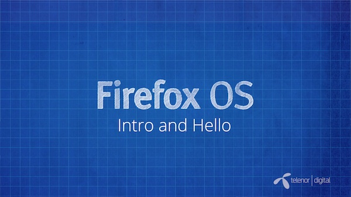
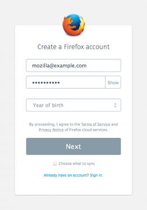
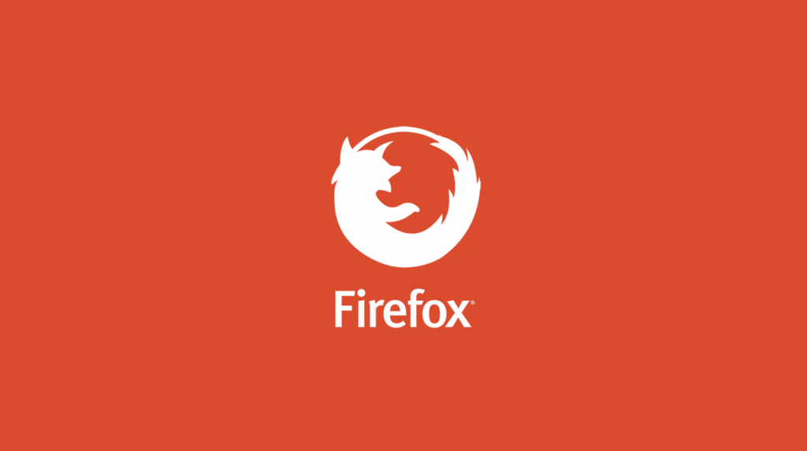
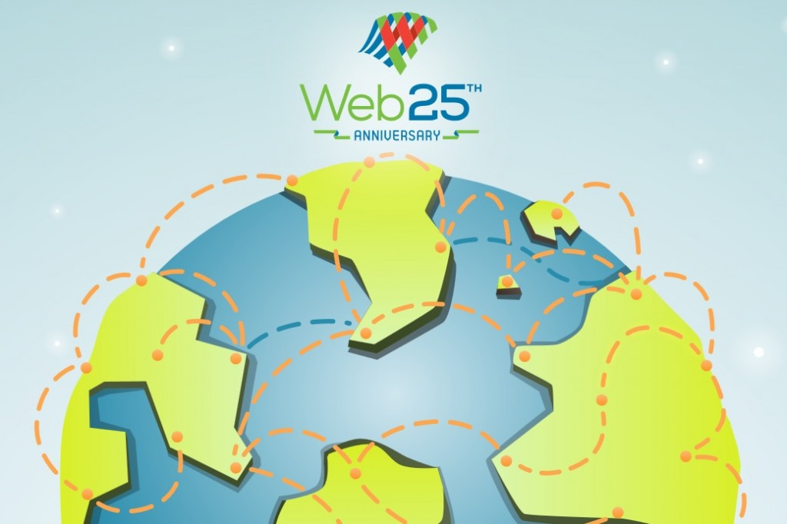
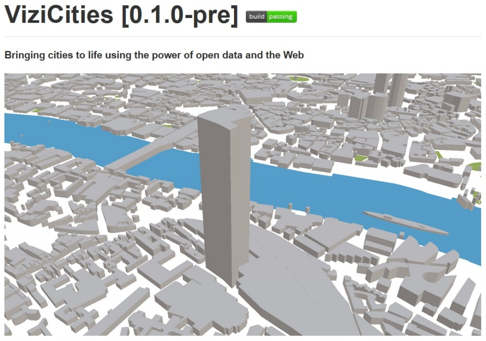
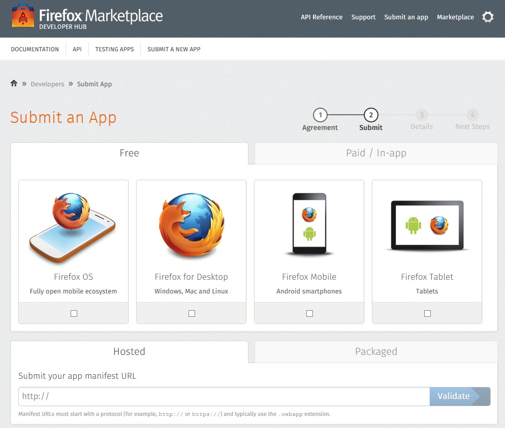

Firefox Marketplace：更新 App

你是熱血的 Firefox OS 開發者，而且早已設計了許多 App 準備大展身手嗎？在將自己的 App 提交到 Firefox Marketplace 之後，如果要更新自己的作品又該怎麼辦呢？先來這裡看看該如何更新 Marketplace 中的 App，讓自己的開發作業更順利。 firefoxma...
21 篇文章













